Why Do Dogs Eat Grass?
Most dogs that eat grass are not doing anything dangerous or mysterious. Grass eating is common in dogs, and in most cases it is a normal scavenging…
Stories, guides, and ideas from across the web — written and published around the clock.
Most dogs that eat grass are not doing anything dangerous or mysterious. Grass eating is common in dogs, and in most cases it is a normal scavenging…
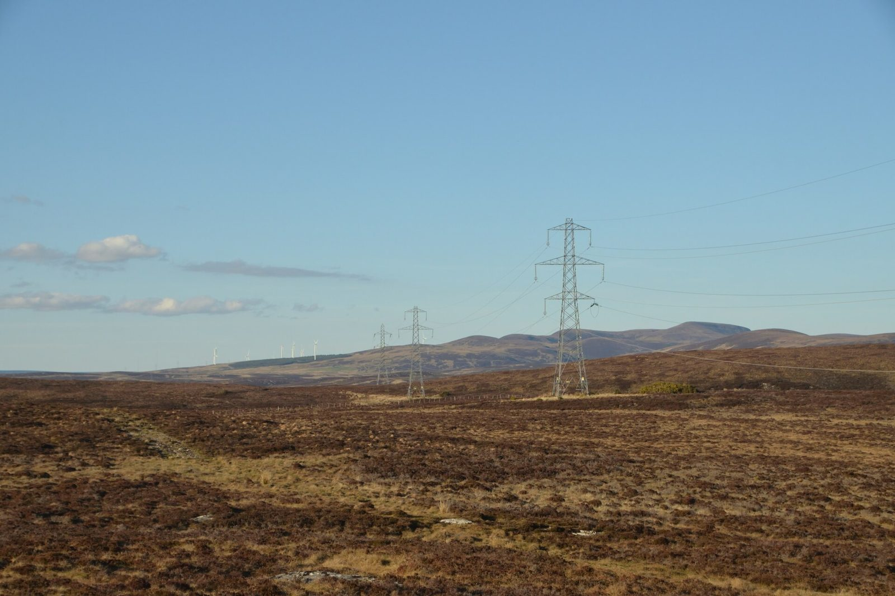
ScienceFor decades scientists assumed that tidy, uniform systems are the most reliable. A new mathematical framework flips that idea on its head: a little…
For 70 years, scientists have tried to climb the fusion-energy mountain head-on. A new set of calculations suggests there may be a far easier pass…
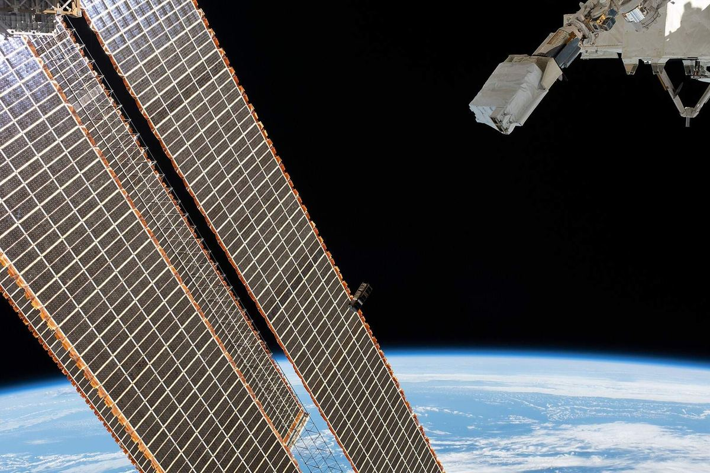
scienceA NASA experiment called FALCON shows spacecraft can work out their position in orbit by treating other satellites and space junk as floating…
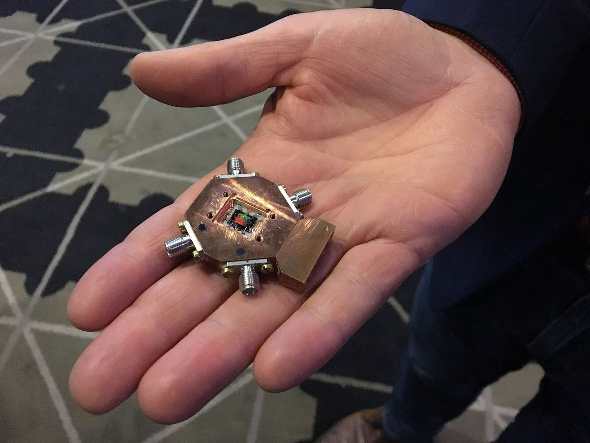
ScienceTiny particles can be in two states at once, yet everyday objects never do. A 62-day experiment buried under a mountain has ruled out one famous…
For a quarter of a century, physicists could measure one famous kind of quantum link, but not its equally important twin. A team in Japan has now…
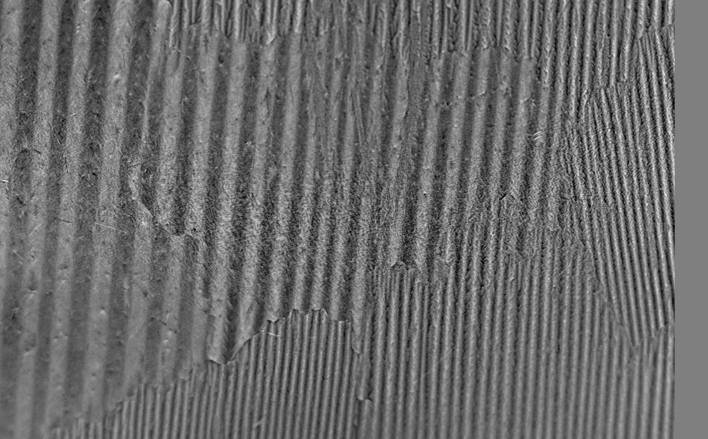
ScienceImagine a particle so shy it refuses to budge on its own. Physicists have just brought fractons, oddities that barely move, a big step closer to…
Every leaf that turns sunlight into food relies on one of chemistry's neatest tricks: moving a proton and an electron together in perfect step. For…
A beam of light can start out completely still and then, all on its own, grow twirling patches as it travels through empty space, no lenses, mirrors…
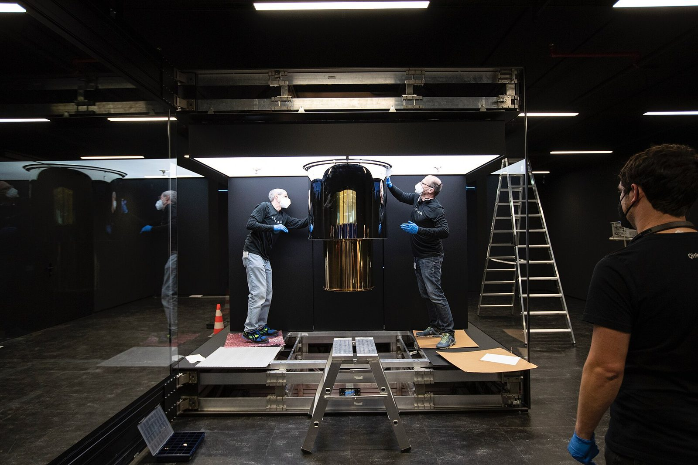
ScienceA laptop can run almost any software you throw at it, but quantum computers have long been limited to a narrow set of tasks. Now physicists have…
Every school morning, a middle schooler waited for her bus at the end of a Florida driveway, sitting on the bare ground with no sidewalk in sight.…
Barbara and Fred both lost their long-time partners, then met among the barbells at their retirement village gym. Now, at 88 and 89, they are proof…
In the hills of north-west Morocco, an old wall overlooking a river turns out to be roughly 4,000 years old, the earliest confirmed defensive…
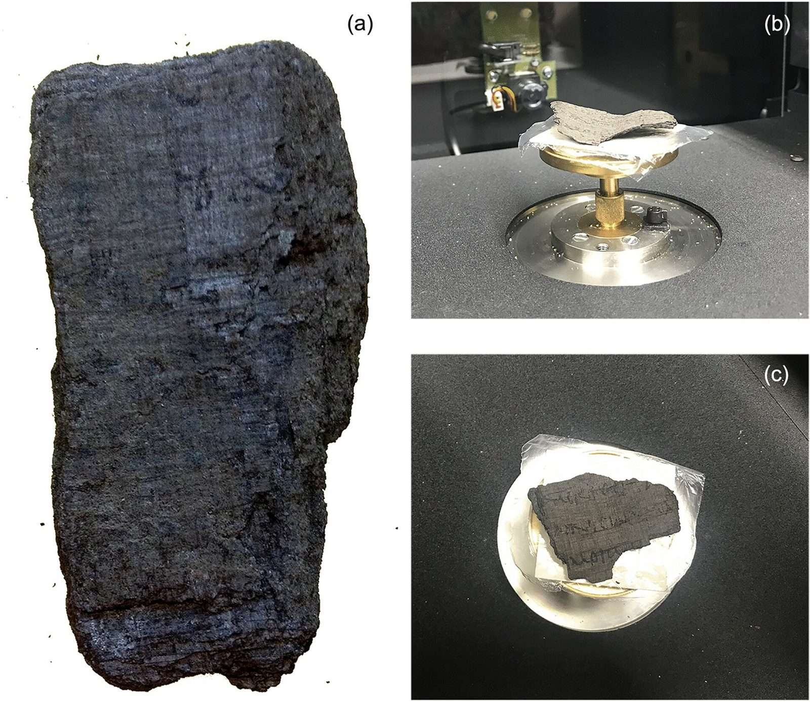
ScienceNearly 2,000 years ago, Mount Vesuvius turned a Roman library into lumps of black charcoal. Now scientists have found a clever trick for peering…
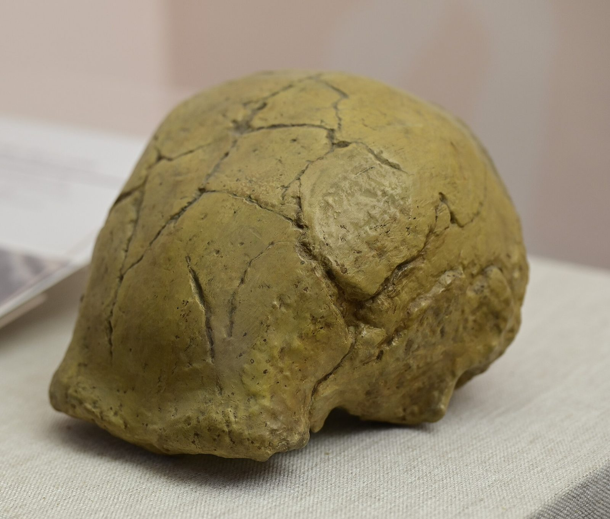
ScienceTooth proteins pulled from 400,000-year-old Homo erectus molars are revealing quiet family ties between an early human ancestor, the Denisovans, and…
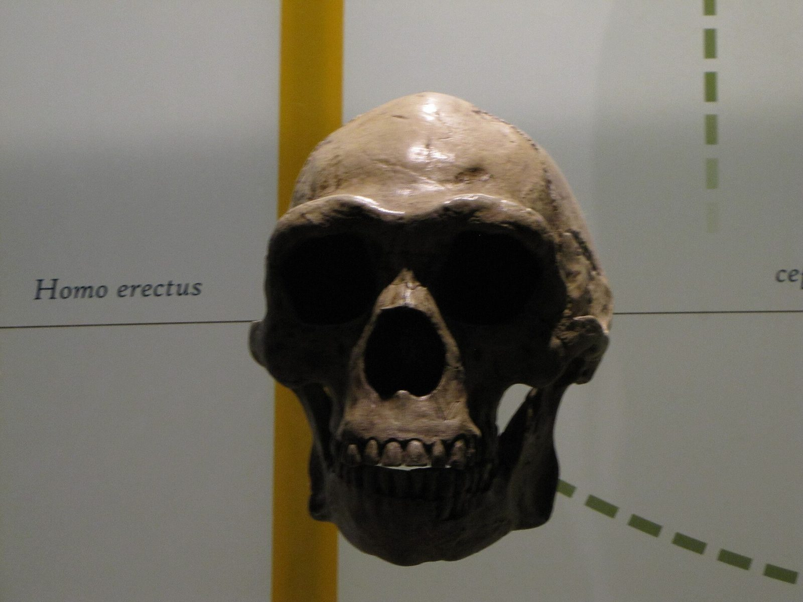
HistoryA dusty box of fossils from a South African cave sat unstudied for decades. Among them was something no one expected: the oldest adult Homo erectus…
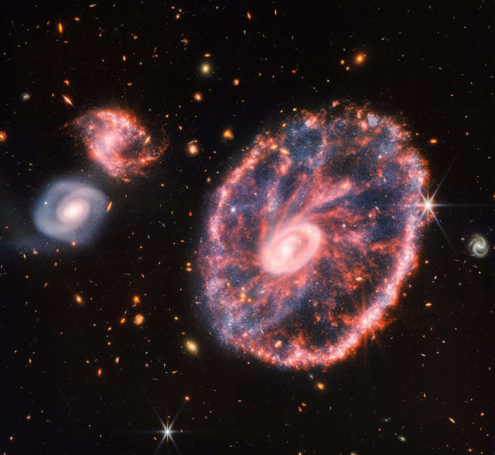
ScienceAstronomers long imagined the young cosmos as a nearly empty place made of hydrogen and helium. New James Webb Space Telescope observations show some…
A European spacecraft on its way to Jupiter just swung past Earth at 8,640 km above the Indian Ocean, borrowing our planet's gravity to speed up…
A 9,500-acre slice of English countryside went up for sale for the first time in centuries, so 25,000 ordinary people chipped in to buy it together…
 Science
ScienceA small fossil collected on an icy Antarctic island in 1985 sat forgotten in a museum drawer for four decades, until a curious scientist opened it…
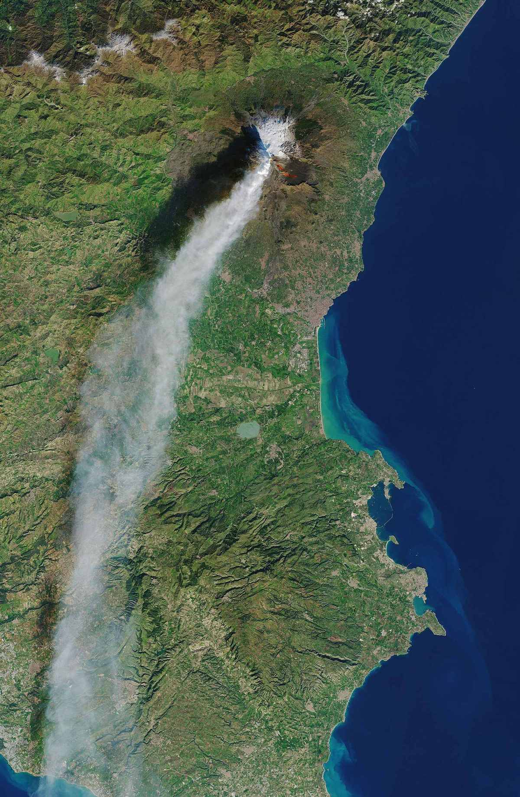
ScienceMount Etna can brew an eruption like a shaken soda bottle or let it fizz slowly for weeks. Scientists cracked the difference by reading minerals that…
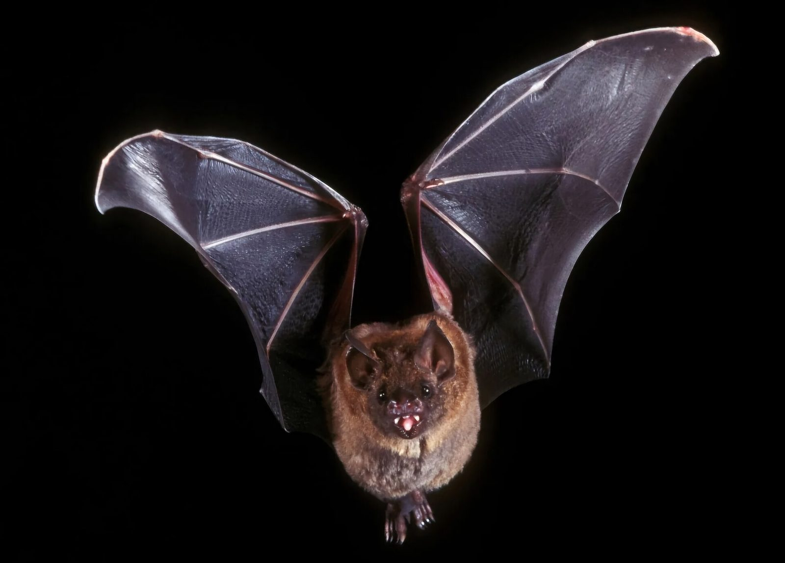
AnimalsBats are the only mammals that truly fly, and for decades nobody could agree where they first appeared. Now the biggest bat study ever assembled (103…
Two shelter brothers with unusually long legs turned out to be the first cats ever documented with a rare condition known mostly in humans, and their…
Mount Vesuvius erupted in 79 AD and buried Pompeii. That same 2,000-year-old catastrophe is now serving as a calibration point for argon-argon…
Life's building blocks had to gather somewhere before there were any cells to hold them. New research shows a single oxygen atom makes RNA unusually…
Engineers have turned the same machine knitting used for hats and gloves into dense fabrics that snap between two stable shapes, and can even switch…
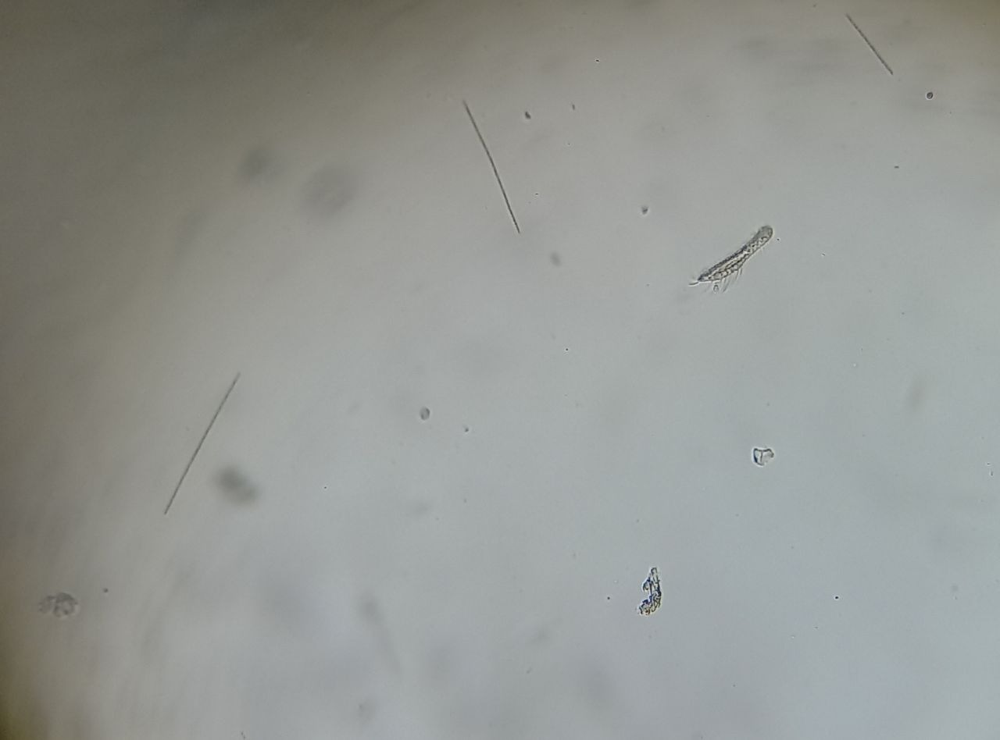
ScienceMeet Spirostomum, a pond-dwelling cell the size of an eyelash that snaps its body to a quarter of its length faster than you can blink, and…
Spaceport Cornwall and New Zealand firm Dawn Aerospace have signed an agreement to explore flying a reusable, runway-launched spaceplane from…
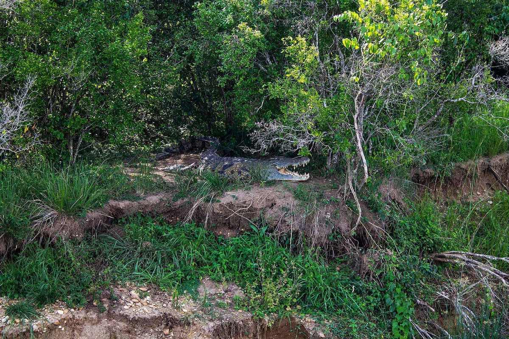
ScienceWhen the asteroid struck 66 million years ago, most dinosaurs vanished, but crocodiles and their relatives lived on. A new study of 7,000 fossils…
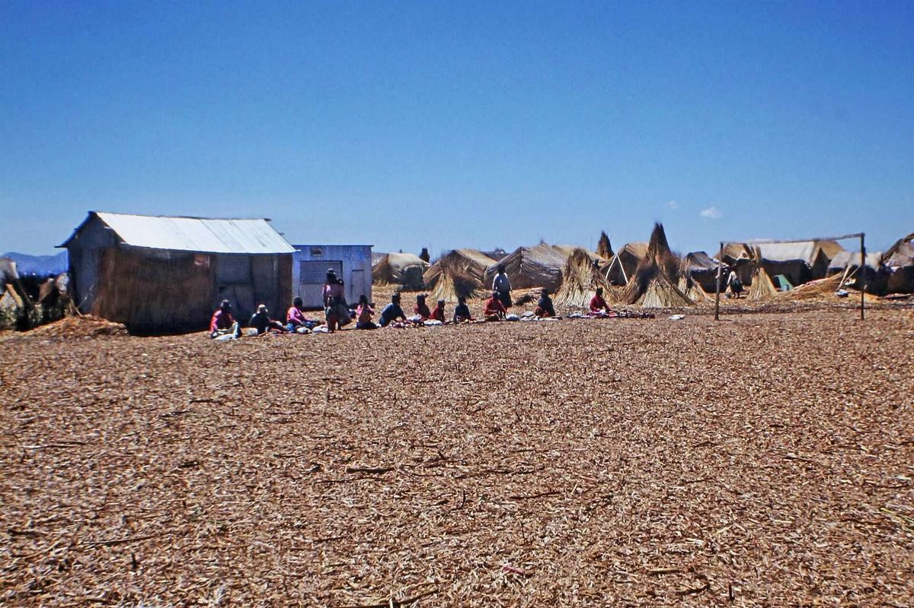
listiclesOn Lake Titicaca in Peru, the Uros people have been building entire floating cities out of totora reeds for generations, proving that a floating home…
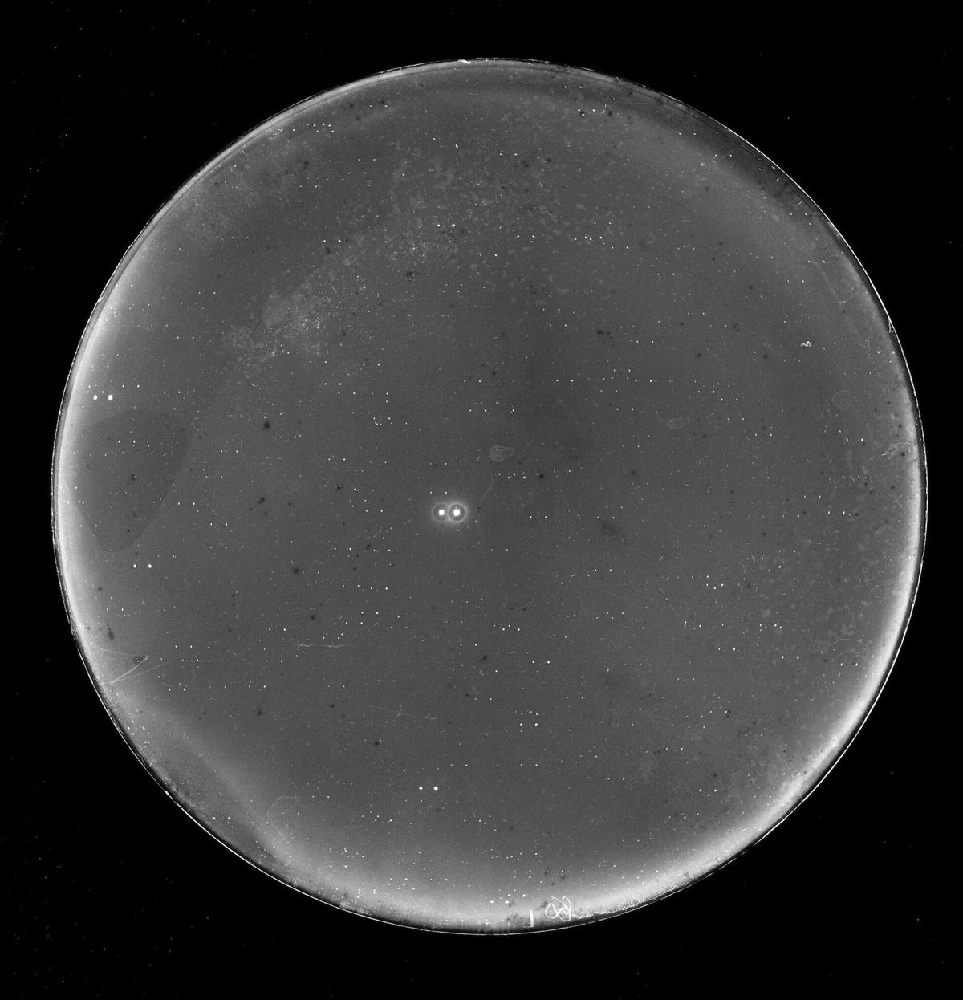
spaceFor 171 years, astronomers have puzzled over a tiny wobble in the light from a star system just 16 light-years from Earth. Now, a team led by the…
What if the universe's accelerating expansion doesn't need a mysterious invisible force at all? Mathematicians say a flaw in the standard model could…
 General
GeneralAstronomers have solved a 170-year-old wobble mystery around the nearby binary star 70 Ophiuchi, and by ruling out giant planets, they've narrowed…
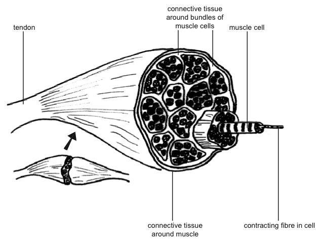
ScienceAs we grow older, our muscles shift from fast-twitch to slow-twitch fibers, and scientists now believe this is not just a sign of decline, but a…
Scientists at Mayo Clinic have uncovered fresh details about 'zombie' cells, aging cells that linger in the body and fuel inflammation. Seven new…
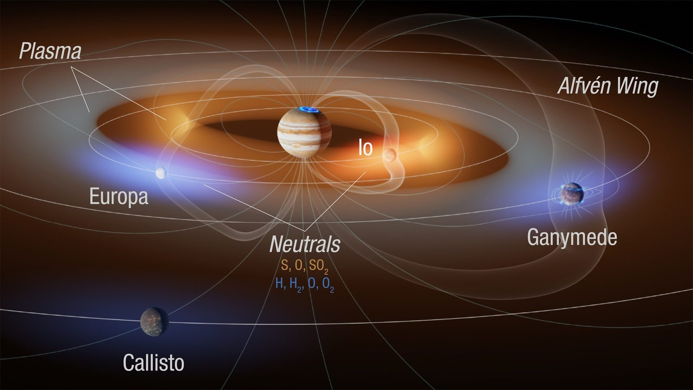
ScienceNASA's Juno spacecraft has discovered that Jupiter defends itself from the solar wind using a clever symphony of plasma waves and multiple shock…
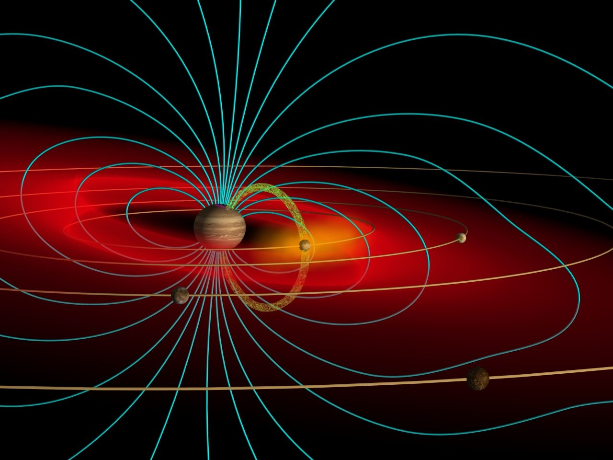
spaceJupiter's Juno spacecraft discovered the gas giant's bow shock works like a cosmic symphony, using plasma waves with multiple frequencies to deflect…
For billions of years after the Big Bang, the universe was filled with a thick fog of neutral hydrogen that blocked all light. Astronomers thought…
Imagine an island so small you could walk across it in an hour. Now imagine that island deciding to protect more of the ocean around it than almost…
In 1970, Pat Palinkas stepped onto a football field as the placekick holder for the Orlando Panthers, becoming the first woman to play professional…
For nearly a millennium the Tower of London has worn many crowns: royal palace, armoury, treasury, menagerie, mint, and prison. Its stones have…
Ancient ice cores drilled from the Guliya Ice Cap in Tibet carry climate secrets stretching back more than 128,000 years, far older than scientists…
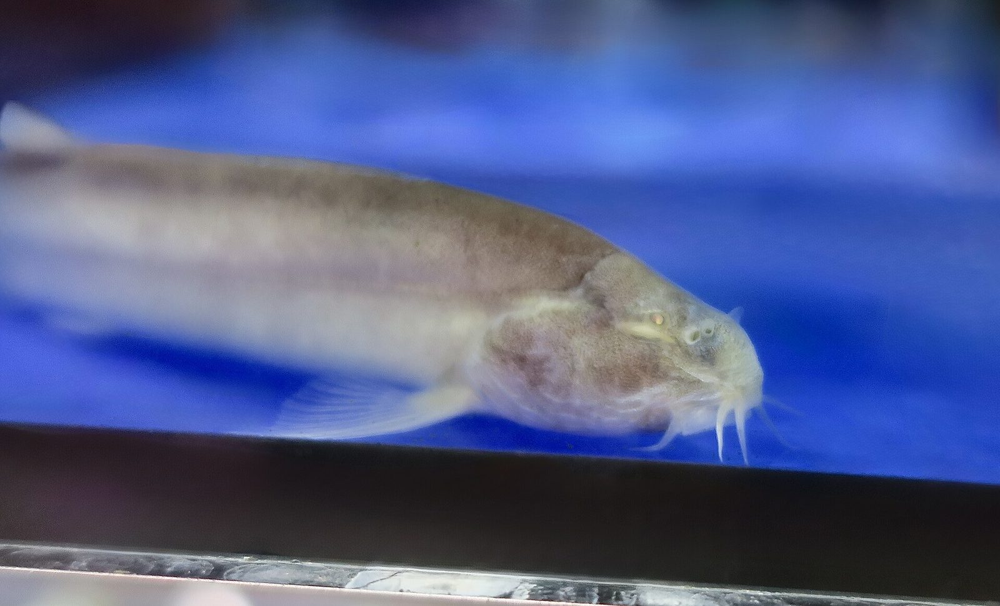
scienceA pale, translucent fish with skin-covered eyes was hiding in plain sight, spotted not on a research expedition, but in a TikTok video showing it…
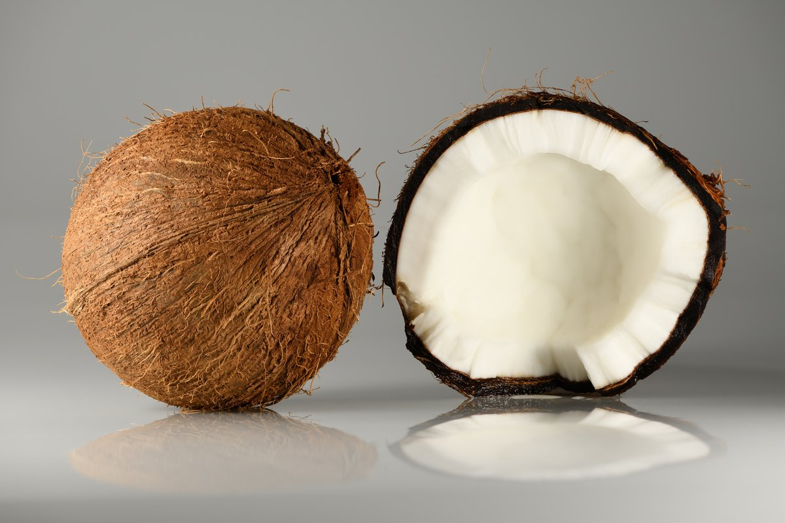
ScienceScientists in Japan have turned discarded coconut oil into a sustainable aviation fuel that runs in a real jet engine, cuts pollution, and uses waste…
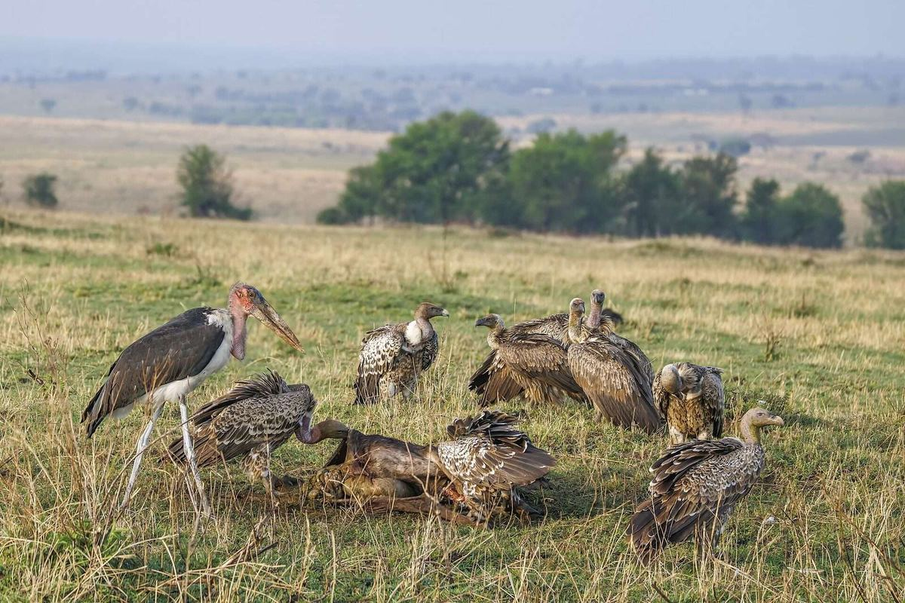
wildlifeA trio of juvenile white storks has arrived at Willington Wetlands in Derbyshire, marking the hopeful beginning of their return to the English…
After a comedian joked that documentary shorts are 'little sads,' Good News Network teamed up with Switchboard Magazine to spotlight feel-good films…
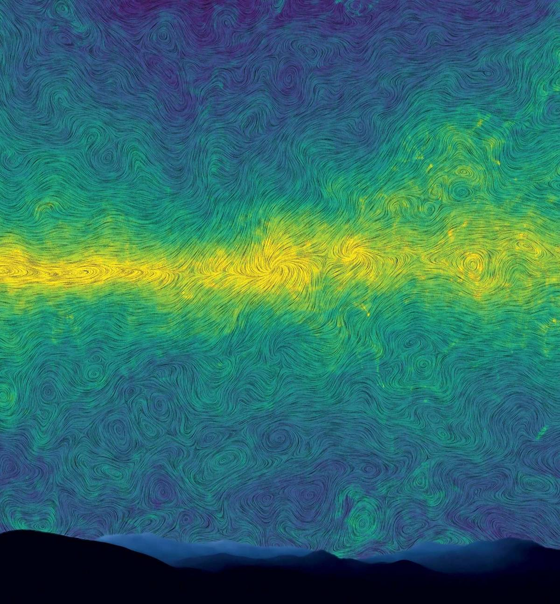
ScienceMathematicians at UC Davis found that the math behind the Big Bang's most popular model is so shaky that the universe might not need dark energy at…
A narrow stretch of water between two Antarctic islands now carries the name of a longtime science journalist who reported on ice, climate, and…
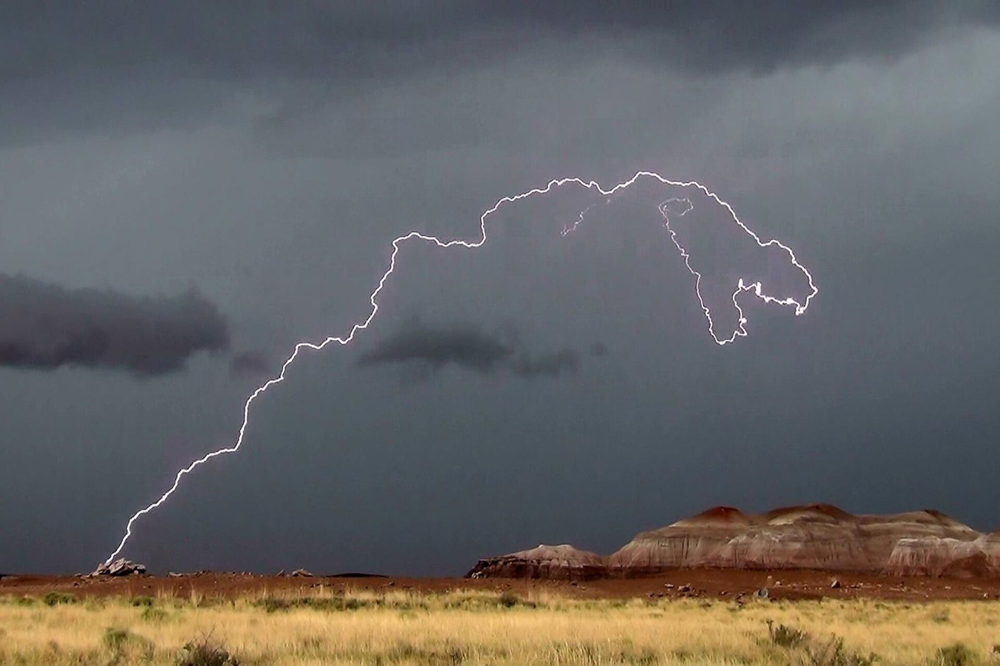
InspiringNick and Eva Broderick were hiking in Wisconsin's Kettle Moraine State Forest when lightning struck a tree beside them. Eva performed CPR twice to…
A small island in Scotland's Inner Hebrides was long known only from old stories and place names, but a community-led dig has uncovered the buried…
From laboratory tanks to airport runways, new animal species turn up where we live, work, and travel, sometimes right under our noses.
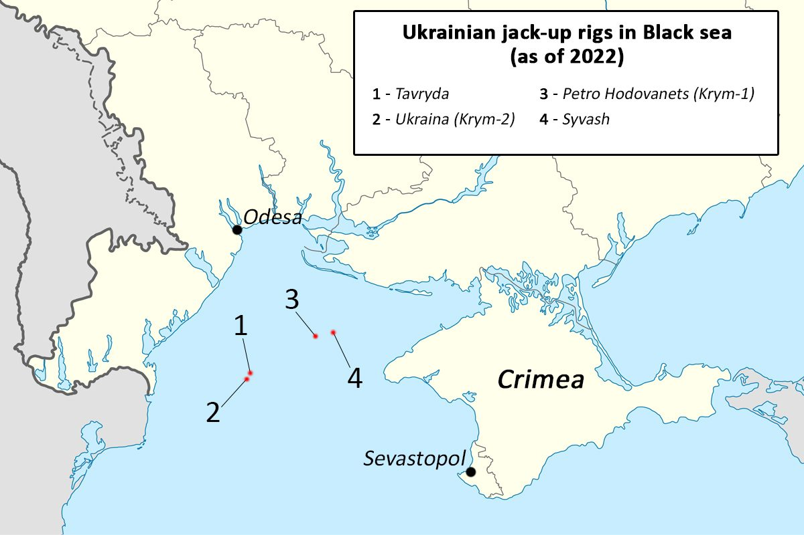
GeneralIn the quiet coastal region of southern Tanzania, a new chapter in the country's energy story has opened. At the Kasa-1X ST2 well in the Mnazi Bay…
A first-grade teacher in Kansas started a simple daily affirmation circle: now children across every grade at Rex Elementary are ending their school…
title: Why are the universe's laws so perfectly tuned for life? It might be because of how water flows
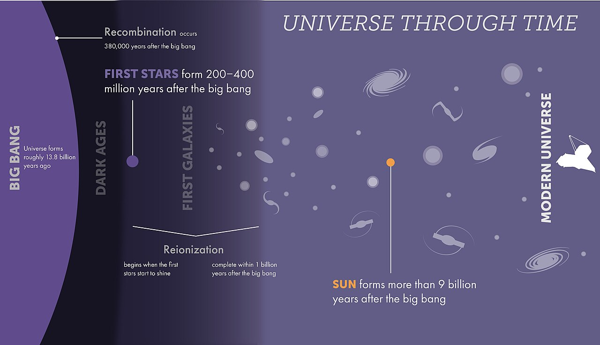
ScienceUsing the world's most powerful supercomputers, the MEGATRON project is simulating how the very first stars lit up the universe and forged the…
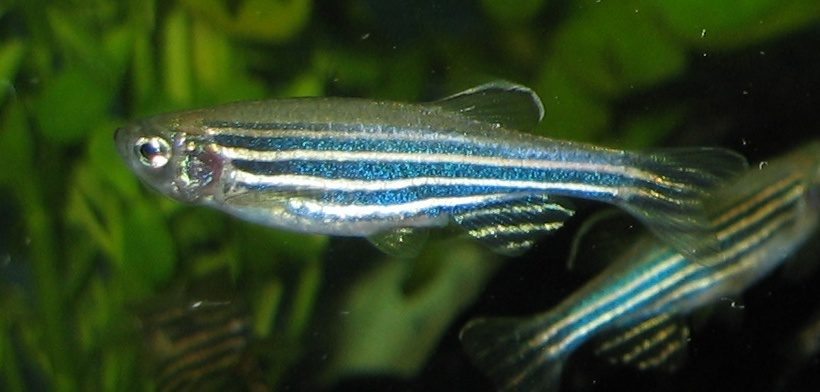
Generaltitle: "How Did a Striped Bee Travel Hundreds of Miles to Find a Home in Somerset?"
Switzerland's glaciers lost more than 5% of their ice in just one year, and nearly 20% in five years. Scientists are watching closely because these…
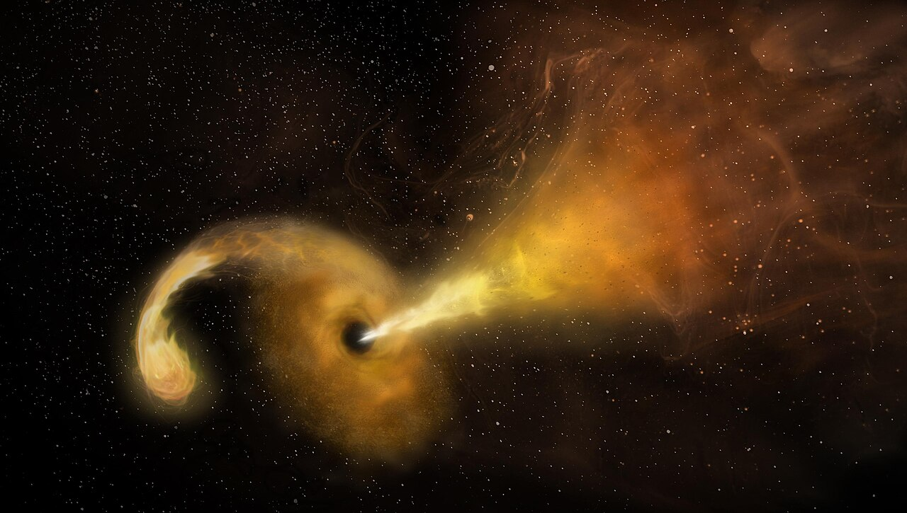
scienceAstronomers found a surprising 2% rule: whether it's a small black hole or a supermassive giant, jets fire when feeding drops to the same critical…
For almost 2,000 years, everyone agreed: Mount Vesuvius erupted on August 24, AD 79. But fresh clues (from pomegranate seeds to ancient coins)…
A gamma-ray burst designated GRB 220706A kept its central engine firing X-ray flares for 27 days, 20 days longer than any burst seen before.…
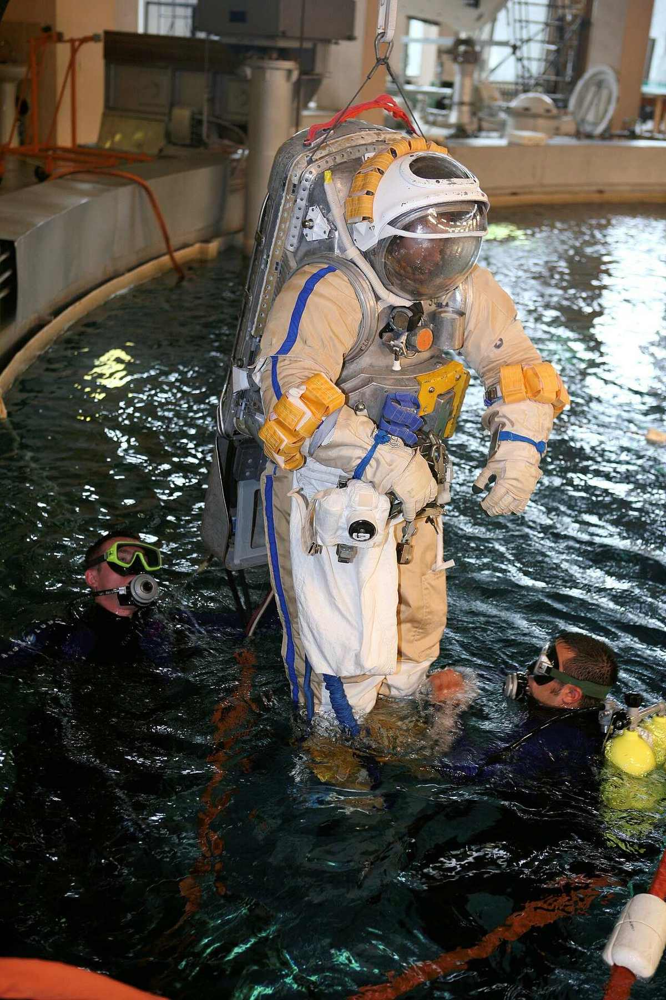
ExplainersLiving underwater in a locked, pressurized habitat for days at a time sounds extreme, but it is exactly what NASA uses to get astronauts ready for…
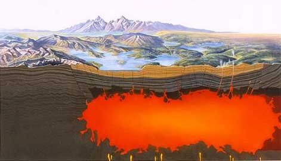
ScienceBeneath Japan's Kikai caldera, the site of Earth's largest known eruption in the past 11,700 years, fresh magma is quietly refilling the underground…
Deep inside diamonds and other crystals are tiny imperfections called 'spin defects'. When light hits them, they lose energy in a surprising way that…
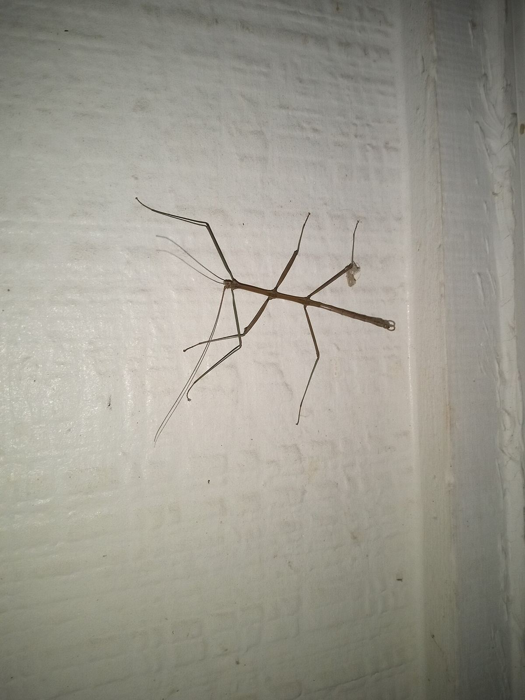
ScienceScientists thought one common Australian stick insect was just two species. A close re-examination of museum specimens turned that into five…
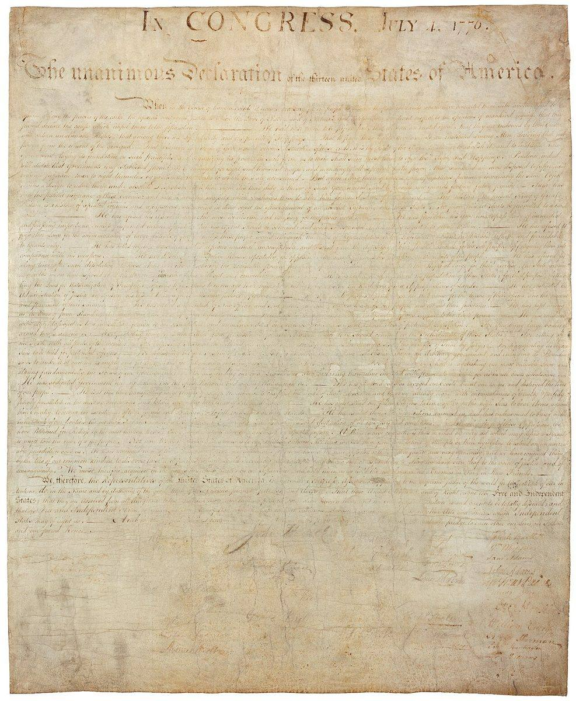
ScienceBefore 'United States of America,' there was 'United Colonies,' 'Columbia,' and even 'United States of the Earth.' Here is how the name that fit on a…
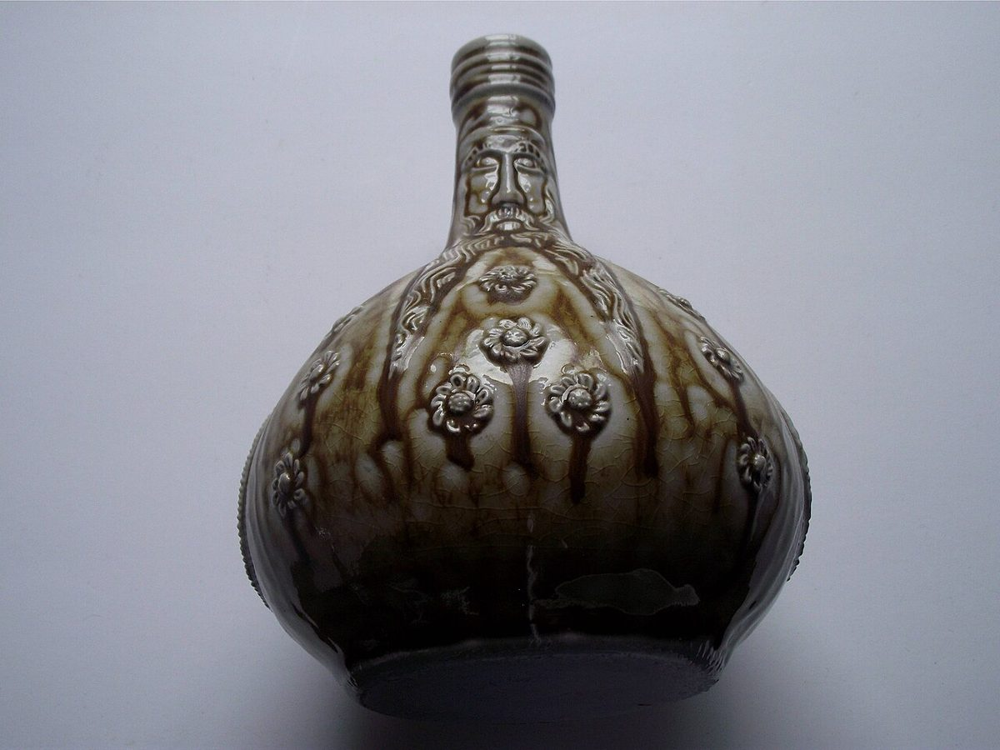
HistoryFrom witch bottles buried under floors to hexafoil marks carved in wood, people across history tucked away tiny magical safeguards to keep their…
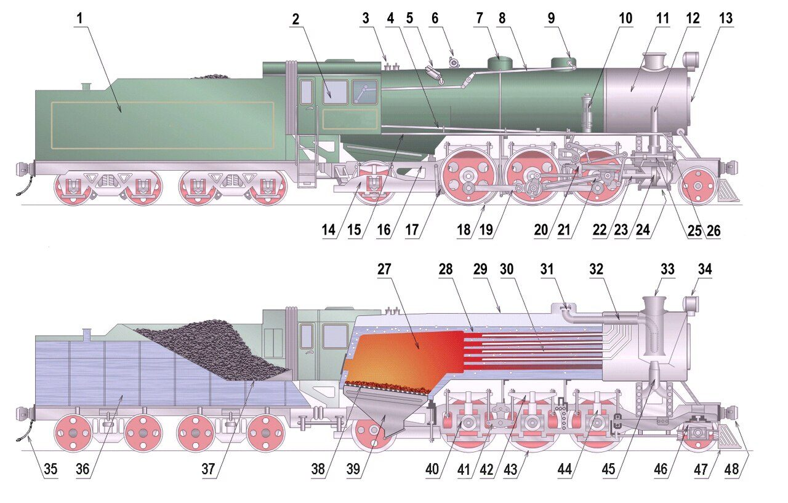
ScienceA train in Exeter was delayed not by broken rails, but by sunlight from the Sun. It took scientists nearly two centuries, and a typo, to work out…
The big mouth-stretch everyone shares, and the reason one person's yawn can set off a whole room. Scientists are still working out the first part…